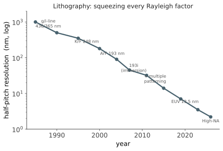

制造 II · 光刻的物理极限
层次：本科核心 + 业界最关键的技术瓶颈 ｜ 核对于 2026-07（High-NA 部分属前沿）。 一个看似矛盾的事实：主流光刻长期使用波长 193 nm 的光，却能画出十几纳米的结构。这怎么可能？本页把分辨率这件事算清楚——从瑞利公式出发，看行业如何用尽一切手段压榨每一个因子，以及为什么 EUV 需要一个国家级的工程努力才做得出来。
一、瑞利公式：三个可用的旋钮
投影光刻的分辨率与焦深由瑞利判据给出：
- \(\lambda\)：曝光波长；
- \(\mathrm{NA} = n\sin\theta\)：数值孔径（透镜收集光的能力，\(n\) 为介质折射率）；
- \(k_1\)：工艺因子，理论下限约 0.25（单次曝光）。
要提高分辨率（\(R\) 变小），只有三条路：减小 \(\lambda\)、增大 NA、减小 \(k_1\)。行业把这三条全部用尽了。
注意第二个公式的残酷：焦深随 \(\mathrm{NA}^2\) 反比下降。提高 NA 的代价是焦深急剧变浅——先进节点的焦深只有几十纳米量级。这就是上一页 CMP 平坦化必不可少的原因：表面起伏若超过焦深，图形就模糊了。分辨率与工艺容差是一对根本矛盾。
二、减小波长：一条走到尽头的路
历史路径：436 nm（g 线）→ 365 nm（i 线）→ 248 nm（KrF）→ 193 nm（ArF） → 停滞。
为什么停在 193 nm：下一步本应是 157 nm（F₂ 激光），但没有合适的透镜材料（普通石英在该波长强烈吸收，CaF₂ 又有双折射问题），加上光刻胶与掩模材料的困难，157 nm 路线在 2000 年代初被整个行业放弃。
这是一个教科书级的技术路线失败案例：不是因为原理不通，而是材料与工程配套跟不上。行业转而去压榨另外两个因子——于是有了浸没式与多重曝光。
三、增大 NA：浸没式光刻
\(\mathrm{NA} = n\sin\theta\)，在空气中 \(n=1\)，故 NA < 1（实际约 0.93 已接近极限）。
突破口：在透镜与晶圆之间注入超纯水（\(n = 1.44\)）——浸没式光刻（immersion）。
等效于把波长从 193 nm 缩到约 134 nm，而不必更换光源与透镜体系。这是一次极其漂亮的工程绕道——用一层水买到了整整一代的分辨率。（提出者林本坚的这一构想使 193i 成为此后近二十年的主力平台。）
代价：水中气泡、污染、温度控制、扫描时的水膜稳定性——全部是新的工程难题，但都比换波长容易。"选择较易解决的困难"本身就是工程判断力。
四、减小 \(k_1\)：多重曝光与计算光刻
\(k_1\) 的单次曝光理论下限是 0.25。在 193i（\(\lambda/\mathrm{NA} \approx 143\) nm）下，单次曝光的分辨率极限约为 36 nm 半周期。要做更小，只能把一层图形拆成多次曝光。
多重图形化： - LELE（双重曝光双重刻蚀）：把密集图形拆成两套稀疏图形，分别曝光； - SADP/SAQP（自对准双/四重图形化）：先做一组芯轴，在其侧壁沉积间隔层，去除芯轴后剩下的侧壁就成了图形——周期直接减半（或四分之一），且"自对准"避免了套刻误差。
代价极其昂贵：工序数成倍增加、掩模数增加、周期变长、成本上升，且套刻误差成为新的良率杀手。在 EUV 出现前，7nm 级别的关键层需要多达四重甚至更多次图形化——这正是当时成本飙升的主因。
计算光刻：由于图形尺寸远小于波长，衍射效应严重，掩模上的图形与晶圆上的成像完全不同。于是需要： - OPC（光学邻近效应修正）：预先扭曲掩模图形（加衬线、锤头），使成像后接近目标； - 相移掩模、离轴照明、光源-掩模协同优化（SMO）； - 逆向光刻（ILT）：直接把它当作反问题求解——给定目标图形，反解出最优掩模。这是一个大规模优化问题，现在普遍用 GPU 加速甚至机器学习辅助（🔗 cs 站/AI 站）。
掩模上的图形已经完全不像最终电路了——它是为衍射方程"预补偿"过的产物。这是"用算力换制造能力"的典范。
五、EUV：为什么它这么难
极紫外光刻（EUV）：\(\lambda = 13.5\) nm，比 193 nm 小了一个数量级，一步跨越多年积累的困难。

EUV 的困难几乎每一项都是根本性的：
- 所有材料都吸收 13.5 nm 的光 → 不能用透镜，必须全反射式；而普通反射镜也不行，需要多层布拉格反射镜（数十对 Mo/Si 交替层，靠干涉反射），每面镜子反射率仅约 70%。十几面镜子串起来，光能只剩百分之几；
- 必须在真空中工作（空气也吸收）；
- 光源极其困难：主流方案是用高功率 CO₂ 激光每秒数万次轰击锡液滴，激发等离子体产生 EUV。转换效率极低，光源功率与稳定性长期是量产瓶颈；
- 掩模是反射式的，且必须无缺陷——EUV 掩模缺陷检测与修复本身就是一个产业难题；
- 光刻胶的三难困境：分辨率、线边缘粗糙度、感光度三者互相冲突（RLS trade-off）。EUV 光子能量高、单位剂量的光子数少，导致散粒噪声成为随机缺陷的来源——这是一个把量子统计直接推到量产良率面前的问题。
结果：EUV 光刻机成为人类制造过程中最复杂的商用设备之一，单台价格上亿美元，且全球仅有一家供应商（ASML）能够制造——这个事实塑造了整个半导体地缘格局（第二十页）。
High-NA EUV：把 NA 从 0.33 提高到 0.55，进一步提升分辨率。代价是焦深进一步变浅、成像场尺寸减半（需要把大芯片拆开曝光再拼接），以及更昂贵的设备。它是延续缩放的关键，但也再次体现了"每一步都要付更大的代价"。
六、要点
- \(R = k_1\lambda/\mathrm{NA}\) 是理解整个光刻史的公式——三个因子被逐一压榨到极限；
- 焦深随 \(\mathrm{NA}^2\) 反比恶化，分辨率与工艺容差是根本矛盾；
- 157 nm 的失败说明技术路线不只取决于原理，更取决于材料与配套；
- 浸没式是绕道的典范，多重图形化是用成本换分辨率，计算光刻是用算力换制造能力；
- EUV 的每一项困难都源于"所有材料都吸收该波长"这一条物理事实；
- 光刻的极限直接决定了整个行业的节奏，也决定了产业的集中度。
下一页：设计与制造之间还隔着一整套软件——EDA。几十亿个晶体管不可能手工摆放，它们是被算法造出来的。